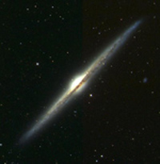

February 26, 2009
|
+ enlarge  |
|
Spiral galaxies seen edge-on
often show dark lanes of interstellar dust blocking light from the galaxy's stars,
as in this image of the galaxy NGC 4565 from the Sloan Digital Sky Survey (SDSS-II).
The dust is formed in the outer regions of dying stars, and it drifts off to mix
with interstellar gas. The new analysis of quasar colors shows that galaxies also expel dust to distances of several hundred thousand light years, ten times farther than the visible edge of the galaxy seen in this image. The thin haze of intergalactic dust dims and reddens the light from background quasars. (Credit: The Sloan Digital Sky Survey) |
The vast expanses of intergalactic space appear to be filled with a haze of tiny, smoke-like "dust" particles that dim the light from distant objects and subtly change their colors, according to a team of astronomers from the Sloan Digital Sky Survey (SDSS-II).
"Galaxies contain lots of dust, most of it formed in the outer regions of dying stars," said team leader Brice Ménard of the Canadian Institute for Theoretical Astrophysics. "The surprise is that we are seeing dust hundreds of thousands of light-years outside of the galaxies, in intergalactic space."
The new findings are reported in a paper titled "Measuring the galaxy-mass and galaxy-dust correlations through magnification and reddening," submitted to the journal Monthly Notices of the Royal Astronomical Society, and posted today on the web site arXiv.org.
To discover this intergalactic dust, the team analyzed the colors of distant quasars whose light passes in the vicinity of foreground galaxies on its way to the Earth.
Dust grains block blue light more effectively than red light, explained astronomer Ryan Scranton of the University of California, Davis, another member of the discovery team. "We see this when the sun sets: light rays pass through a thicker layer of the atmosphere, absorbing more and more blue light, causing the sun to appear reddened. We find similar reddening of quasars from intergalactic dust, and this reddening extends up to ten times beyond the apparent edges of the galaxies themselves."
The team analyzed the colors of about 100,000 distant quasars located behind 20 million galaxies, using images from SDSS-II. "Putting together and analyzing this huge dataset required cutting-edge ideas from computer science and statistics," said team member Gordon Richards of Drexel University. "Averaging over so many objects allowed us to measure an effect that is much too small to see in any individual quasar."
Supernova explosions and "winds" from massive stars drive gas out of some galaxies, Ménard explained, and this gas may carry dust with it. Alternatively, the dust may be pushed directly by starlight.
"Our findings now provide a reference point for theoretical studies," said Ménard.
Intergalactic dust could also affect planned cosmological experiments that use supernovae to investigate the nature of "dark energy," a mysterious cosmic component responsible for the acceleration of the expansion of the universe.
"Just like household dust, cosmic dust can be a nuisance," said Scranton. "Our results imply that most distant supernovae are seen through a bit of haze, which may affect estimates of their distances."
Intergalactic dust doesn't remove the need for dark energy to explain current supernova data, Ménard explained, but it may complicate the interpretation of future high-precision distance measurements. "These experiments are very ambitious in their goals," said Ménard, "and subtle effects matter."
Funding for the SDSS and SDSS-II has been provided by the Alfred P. Sloan Foundation, the Participating Institutions, the National Science Foundation, the U.S. Department of Energy, the National Aeronautics and Space Administration, the Japanese Monbukagakusho, the Max Planck Society, and the Higher Education Funding Council for England. The SDSS Web Site is http://www.sdss.org/.
SDSS is managed by the Astrophysical Research Consortium for the Participating Institutions. The SDSS-II Participating Institutions are the American Museum of Natural History, Astrophysical Institute Potsdam, University of Basel, University of Cambridge, Case Western Reserve University, University of Chicago, Drexel University, Fermilab, the Institute for Advanced Study, the Japan Participation Group, Johns Hopkins University, the Joint Institute for Nuclear Astrophysics, the Kavli Institute for Particle Astrophysics and Cosmology, the Korean Scientist Group, the Chinese Academy of Sciences (LAMOST), Los Alamos National Laboratory, the Max-Planck-Institute for Astronomy (MPIA), the Max-Planck-Institute for Astrophysics (MPA), New Mexico State University, Ohio State University, University of Pittsburgh, University of Portsmouth, Princeton University, the United States Naval Observatory, and the University of Washington.
{kind=link}